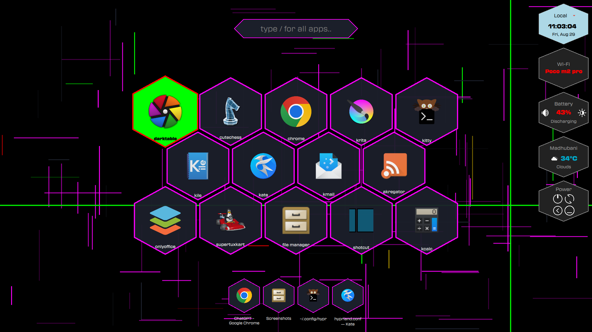
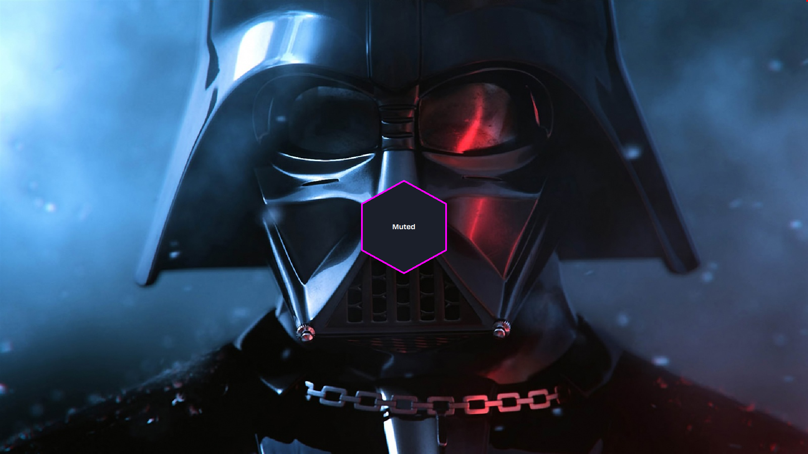
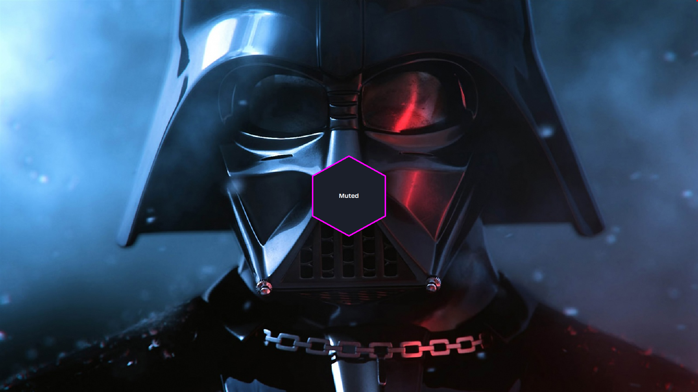
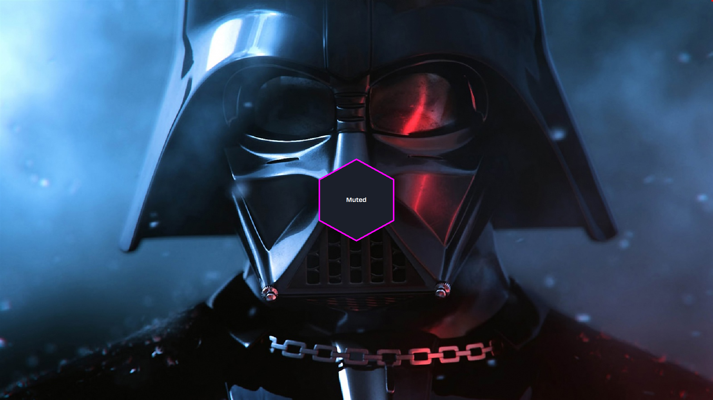

SuperFast & Futuristic
Uses C++ and QML for superfast experience.
QML provides fluid animations that makes it feel extra fast and responsive.
Widgets provides daily features: time, weather, battery, network, powerbuttons.
Fast Search function.
Opened apps focus, close.
Two dynamic backgrounds: sciFiBg and sinBg.
OSD for Volume & Brightness.
Supports Hyprland, Labwc, and other Wayland compositors.
High Quality
Optimized for speed and responsiveness, making your workflow smoother than ever.
Boxes have slightly cut corners for a modern squared look.

 


INI Config
Uses INI file for editing features of the shell like what compositors deploy in Linux space.
It's both easy and fast.